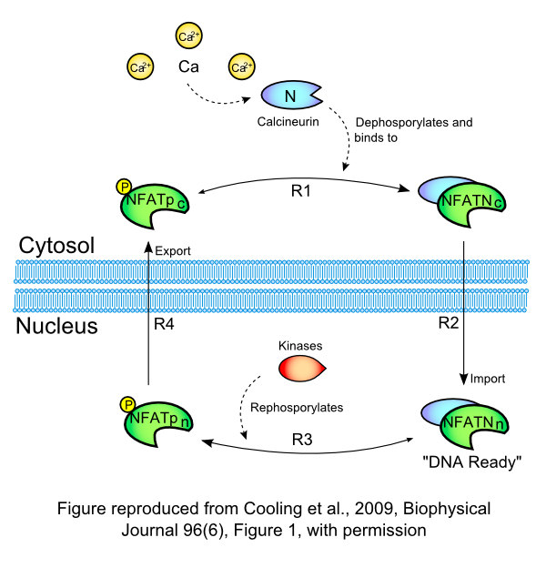

This CellML model is the model which was used to produce the original results in the paper, and therefore it is known to be completely accurate.
Model Files are available here:
1. The main file: NFATMyocyte_ShenProtocol_Submodel.cellml.
2. NFATCycling_ShenProtocol.cellml.
3. calcium_ShenProtocol.cellml.
4. calcineurin_ShenProtocol.cellml.
ABSTRACT: The nuclear factor of activated T-cell (NFAT) transcription factors play an important role in many biological processes, including pathological cardiac hypertrophy. Stimulated by calcium signals, NFAT is translocated to the nucleus where it can regulate hypertrophic genes (excitation-transcription coupling). In excitable cells, such as myocytes, calcium is a key second messenger for multiple signaling events, including excitation-contraction coupling. Whether the calcium signals due to excitation-contraction and excitation-transcription coupling coincide or how they can be differentiated is currently unclear. Here we construct a mathematical model of NFAT cycling fitted to skeletal myocyte and baby hamster kidney cell data. The model replicates key behavior with respect to sensitivity to calcineurin overexpression and to calcium oscillations. Finally, we measure the sensitivity of the system to a simulated hypertrophic calcium signal, against a background excitation-contraction coupling calcium oscillation. We find that NFAT cycling is sensitive to excitation-transcription coupling even when both calcium signals are in the same cellular compartment, thus showing that separation of the signals may not be necessary in vitro.
This model of the NFAT cycling system is described in more depth in the original paper which is cited below:
Sensitivity of NFAT Cycling to Cytosolic Calcium Concentration: Implications for Hypertrophic Signals in Cardiac Myocytes, Michael Cooling, Peter Hunter and Edmund J. Crampin, 2009,
